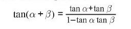

EJERCICIOS EN JAVASCRIPT
EJERCICIO 11
EJERCICIO 12
EJERCICIO 21
EJERCICIO 32
EJERCICIO 31
12. Defina dos variables: alfa = π/8 y beta = π/6. Usando estas variables, demuestre que la siguiente identidad trigonométrica es correcta calculando los valores de los lados izquierdo y derecho de la ecuación. tan(a+3)= tan a+tan B 1-tan a tan 3

Dame el valor el valor de Alpha y Beta:
identidad trigonometrica
Respuesta